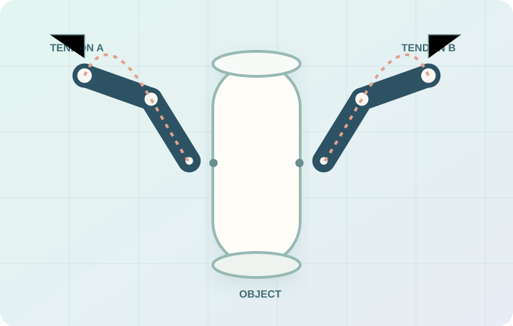
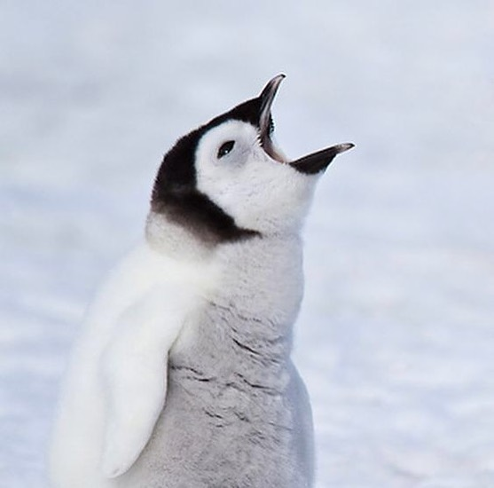

EXPLORING INTELLIGENT ROBOT DESIGN
Designing robots,
from idea
to motion.
Hi, I'm Janice Min — a mechanical engineering student curious about the intersection of robot design, AI, simulation, and control. I love turning questions into things I can model, test, and build.
01 / DESIGN EXPLORATION↗

CURRENT FOCUS
Design × Intelligence

ITERATE · SIMULATE · LEARN2026 — ∞
↓ scroll to discover
A SMALL SELECTION OF MY WORK
Selected projects.
WHERE MY CURIOSITY GOES
Thinking about
robots differently.
I'm particularly interested in how high-level task goals can guide the design of physical robots — bringing together mechanical structure, simulation, optimization, and intelligent decision-making.

A LITTLE REMINDER
Stay curious.
Keep looking up.
AI-driven robot design 01 ↗
Underactuated mechanisms 02 ↗
Reliable robot autonomy 03 ↗